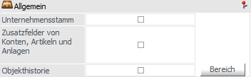
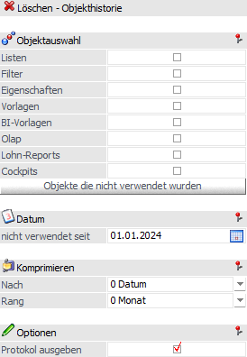
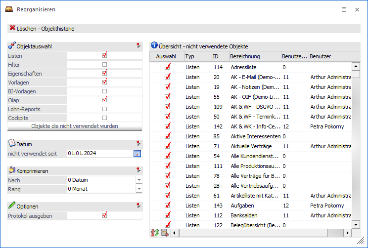
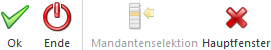
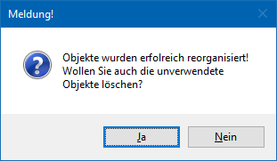

Über diesen Bereich können allgemeine Bestandteile der WinLine reorganisiert werden.

Unternehmensstamm
Alle Unternehmensstammzeilen, für die folgendes gilt, werden gelöscht:
ü inaktiv gesetzt
ü nicht bebucht
ü bei keinem Konto hinterlegt
ü bei keinem Artikel hinterlegt
ü in keinem Stapel vorhanden
ü in keiner Belegzeile vorhanden
Zusatzfelder von Konten, Artikel und Anlage
Das Aktivieren dieser Option bedeutet, dass bei sämtlichen Stammdatensätzen im Konten-, Artikel und Anlagenbereich die Verbindung zu der Zusatzdaten-Tabelle (Tabelle T057 - hier werden alle selbstdefinierten Datenfelder geführt, die im Stammdatenbereich - im Register "Zusatz" - zugewiesen werden können) neu aufgebaut werden.
Objekthistorie
Wird die Checkbox "Objekthistorie" aktiviert oder auf den Button "Bereich" geklickt, so wird automatisch ein Fenster geöffnet, in dem eine Objekt-Selektionen vorgenommen werden kann.

Ø Objektauswahl
In diesem Bereich kann ausgewählt werden, für welche Objekte die Objekthistorie reorganisiert bzw. komprimiert werden soll. Dabei stehen die folgenden Bereiche zur Verfügung:
ü Listen
ü Filter
ü Eigenschaften
ü Vorlagen
ü BI-Vorlagen
ü Olap
ü Lohn-Reports
ü Cockpits
Ø Objekte die nicht verwendet wurden
Durch Anklicken dieses Buttons wird eine Tabelle geöffnet, in der die Objekte angezeigt werden, die seit dem Stichtag (Feld "nicht verwendet seit") keinen Eintrag mehr in der Objekthistorie aufweisen.
Achtung
Nach Anwahl des Buttons ist kein automatisches Reorganisieren mehr möglich. D.h. es kann anschließend nur noch ein Löschen über die Tabelle vorgenommen werden!

In der Tabelle sind folgende Informationen ersichtlich:
ü Auswahl
Über die Checkbox
können die einzelnen Einträge zum Löschen markiert werden.
ü Typ
Hier wird der Objekttyp
angezeigt, der weiterbearbeitet werden soll.
ü ID
Anzeige der internen Nummer
des Objekts.
ü Bezeichnung
Bezeichnung des
Objekts
ü Benutzernummer
Anzeige der
Benutzernummer, welche das Objekt zuletzt bearbeitet hat. Wenn die
Benutzernummer mit 0 ausgewiesen wird, so wurde für das Objekt bereits ein Reorg
durchgeführt, seither wurde das Objekt aber nicht mehr wiederverwendet.
ü Benutzer
Hier wird der
Benutzername (lang) aus der Benutzeranlage angezeigt.
Ø Nicht verwendet seit
Im Zuge der Komprimierung können auch nicht mehr verwendete Objekte automatisch gelöscht werden. Dieses Löschen wird bei der Ausführung aber nochmals extra abgefragt! An dieser Stelle kann nun eingestellt werden, seit wann ein Objekt nicht mehr verwendet worden sein darf, um gelöscht werden zu können.
Ø Komprimieren
In diesem Bereich kann eingestellt werden, wie die Komprimierung erfolgen soll. Dabei stehen zwei Varianten zur Verfügung:
ü Nach Datum
Wird diese Variante
gewählt, kann zusätzlich entschieden werden, nach welchem Zeitraum verdichtet
werden soll, wobei hier die Möglichkeiten "Monat", "Quartal", "Halbjahr" und
"Jahr" zur Verfügung stehen. Je höher der Zeitraum gewählt wird, desto weniger
Datensätze bleiben über (wenn der Zeitraum Monat gewählt wird, dann bleiben z.B.
Datensätze für die Monate 1/2024, 2/2024, 3/2024, 4/2024 etc. über, wenn der
Zeitraum Jahr gewählt wird, dann bleibt nur mehr ein Datensatz für 2024
über).
ü Nach Benutzer
Bei dieser
Variante werden die Historienzeilen auf Benutzerebene komprimiert, d.h. man kann
im Nachhinein noch auswerten, wie oft ein Benutzer bestimmte Objekte verwendet
hat.
Ø Protokoll ausgeben
Im Zuge der Komprimierung können auch nicht mehr verwendete Objekte automatisch gelöscht werden. Dieses Löschen wird bei der Ausführung aber nochmals extra abgefragt! An dieser Stelle kann nun eingestellt werden, ob ein Protokoll der gelöschten Objekte ausgegeben werden soll.
Buttons

Ø Ok
Durch Anklicken des Buttons "Ok" bzw. der Taste F5 werden die Objekthistorienzeilen gemäß der Einstellung sofort komprimiert und die Zeilen, die komprimiert wurden, gelöscht.
Nach dem Abschluss der Komprimierung erfolgt noch die Abfrage, ob die nicht mehr verwendeten Objekte gelöscht werden sollen:

Wird die Meldung mit "Ja" bestätigt, so werden die Objekte gemäß Lösch-Einstellung mit gelöscht. Wird die Meldung mit "Nein" bestätigt, können die Objekte nach wie vor manuell bearbeitet werden (durch Anklicken des Buttons "Objekte die nicht verwendet wurden").
Ø Ende
Durch Drücken des Buttons "Ende" bzw. der Taste ESC wird das Fenster geschlossen und kein Reorg durchgeführt.
Ø Mandantenselektion
Der Button steht an dieser Stelle nicht zur Verfügung.
Ø Hauptfenster
Durch Anwahl dieses Buttons wieder in die Übersicht zurückgewechselt.